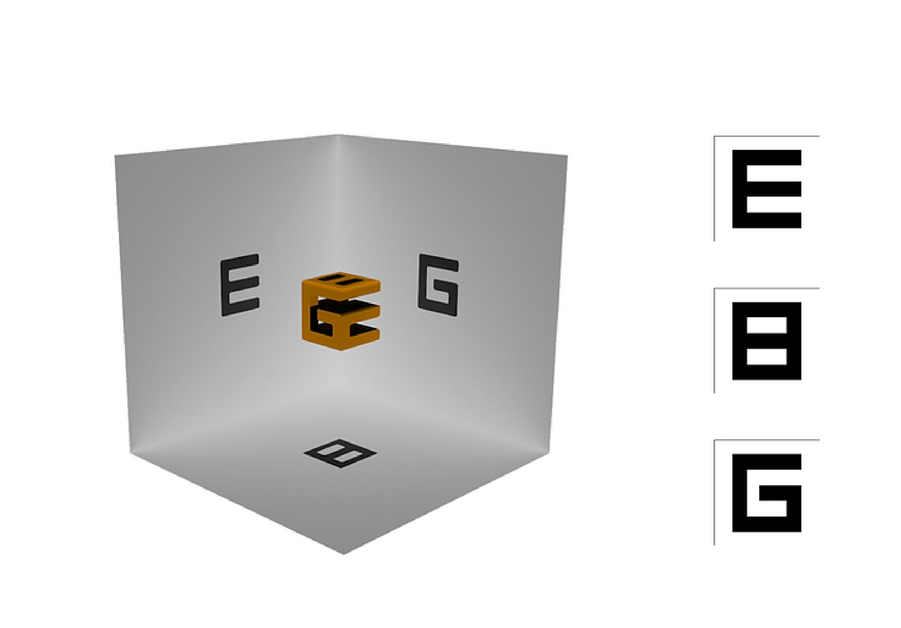
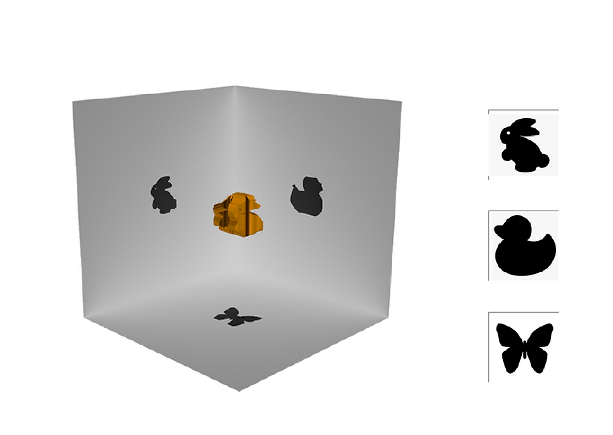

This project aims to generate 3D printable model from given 2D shadow images so that its shadow best approximates the provided input when viewing for orthogonal view points.
Reference:
N. J. Mitra and M. Pauly. 2009. Shadow Art. ACM Transactions on Graphics 28, 5(2009). to appear

Figure: model generated from letters - E, B, G.

Figure: model generated from animals - rabbit, duck, butterfly